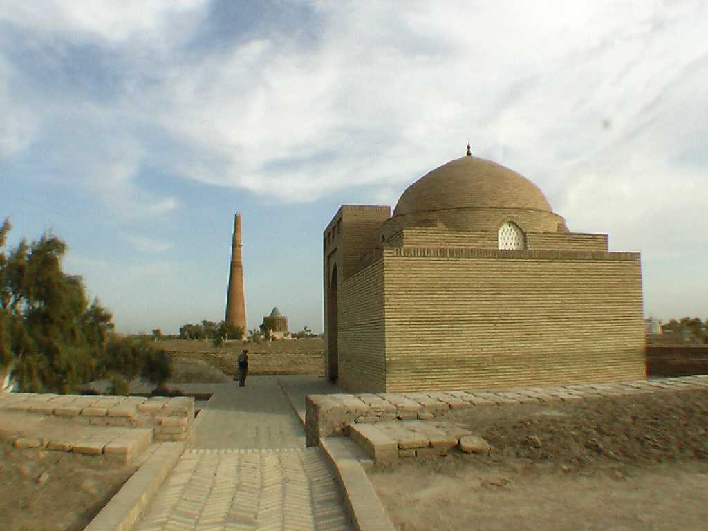
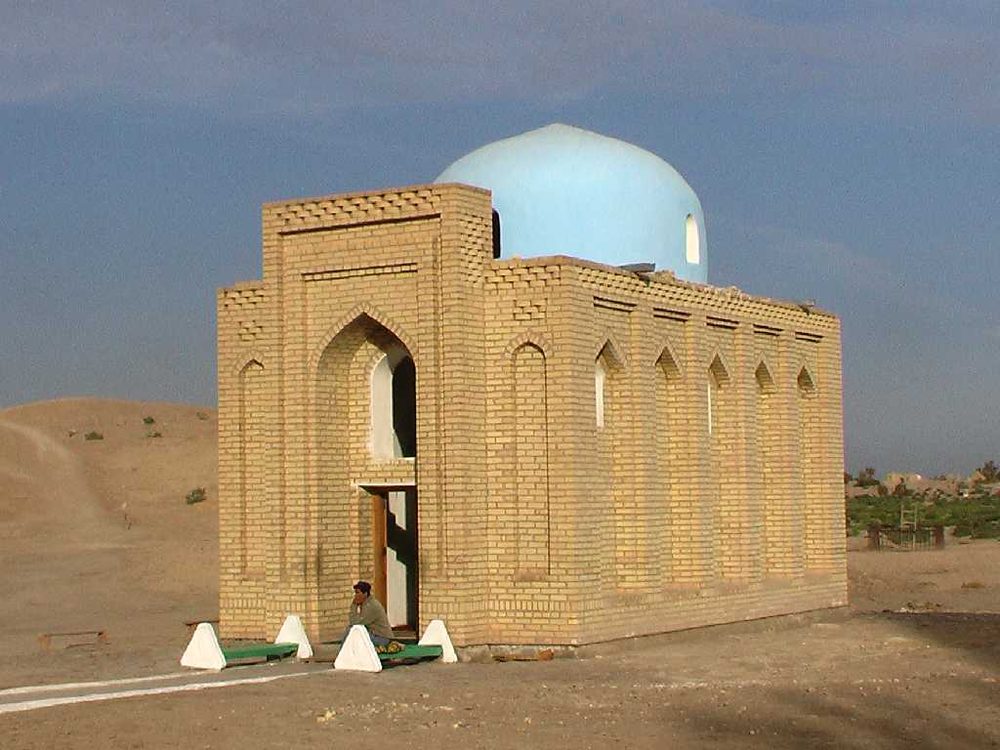
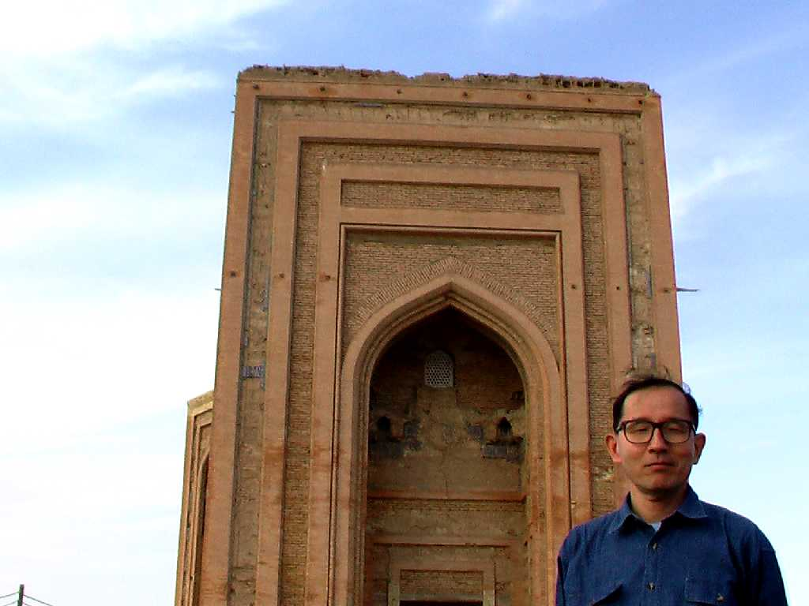

Turabek Khanym mausoleum Kunya Urgench
アムダリア川沿岸のシルクロードの中継都市として栄え１２世紀にはホラズム王国の首都として黄金時代をむかえた トレベクハニム廟は１４世紀チムール朝時代に ウズベクハーンの娘のために創られた

Minaret Kunya Urgench
高さ６０ｍのミナレットはキャラバンルートの目印となっていた

Mosque Kunya Urgench

September 24 2008 Turabek Khanym mausoleum